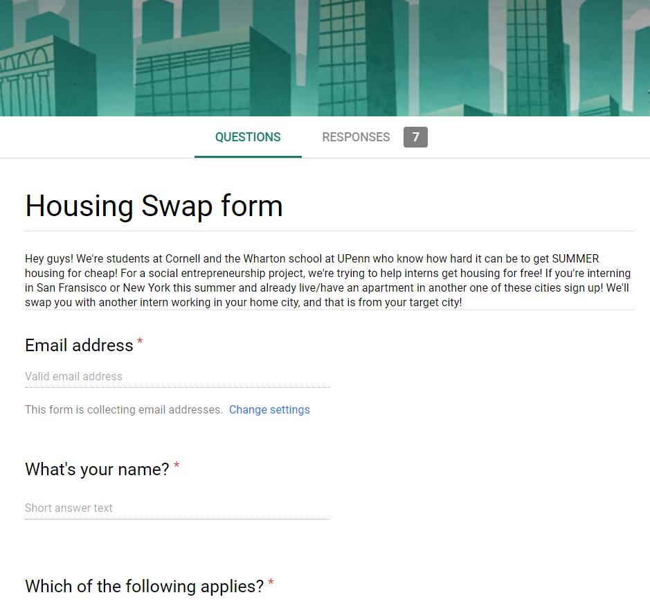

<div id="portfolio-page" class="portfolio-page-content">
    <div class="container">
        <div class="portfolio-nav">
            <div id="portfolio-close-button" class="portfolio-close-button">
                <a href="#portfolio"><i class="fa fa-close"></i></a>
            </div>
        </div>

        <div class="portfolio-title">
            <h1>House Swap</h1>
        </div>

        <div class="row">
            <div class="col-sm-7 col-md-7 portfolio-block">
                <div class="owl-carousel portfolio-page-carousel">
                    <div class="item">
                        
                    </div>
                </div>

                <script type="text/javascript">
                    jQuery(document).ready(function($){
                        $('.portfolio-page-carousel').owlCarousel({
                            smartSpeed:1200,
                            items: 1,
                            loop: true,
                            dots: true,
                            nav: true,
                            navText: false,
                            margin: 10
                        });
                    });
                </script>
            </div>

            <div class="col-sm-5 col-md-5 portfolio-block">
                <!-- Project Description -->
                <div class="block-title">
                    <h3>Description</h3>
                </div>
                <ul class="project-general-info">
                    <li><p><i class="fa fa-globe"></i> <a href="https://forms.gle/fGhAbfJcRDyR4ub17" target="_blank">https://forms.gle/fGhAbfJcRDyR4ub17</a></p></li>
                    <li><p><i class="fa fa-calendar"></i>Spring 2018</p></li>
                </ul>

                <p class="text-justify">House Swap was a way to save money on housing for summer internships. A friend suggested
                    this idea to me and asked me to determine its viability.
                    The value hypothesis was that students from NYC would be interning in SF and
                    students from SF would be interning in NYC, so they would be willing to live in the other's home for the summer and save thousands of dollars in rent.</p>
                <!-- /Project Description -->

                <!-- User & Market Research -->
                <div class="block-title">
                    <h3>User & Market Research</h3>
                </div>
                <p class="text-justify">Since user research required connections beyond my school (Cornell), I created a
                    Google Form asking for basic demographics along with geographical questions, such as which city they live
                    in and where they plan on interning this summer. The survey was just to find people for an interview over video chat later,
                    not serving as the interview itself.</p>
                <!-- /User & Market Research-->

                <!-- Execution & Methodology -->
                <div class="block-title">
                    <h3>Execution & Methodology</h3>
                </div>
                <p class="text-justify">
                    I posted the Google Form in four Facebook groups for people trying to find summer housing either in
                    New York City or San Francisco. Seven people responded in total.
                </p>
                <!-- /Execution & Methodology-->

                <!-- Outcome -->
                <div class="block-title">
                    <h3>Outcome</h3>
                </div>
                <p class="text-justify">This idea would require a large network in order to succeed. Luckily, from the 7
                    people in the survey, we had one viable pair: one person who lived in San Diego was interning in NYC
                    and a NYC native was interning in San Diego. During the interview, both people expressed intense discomfort
                with the thought of a stranger living in their household (even though this was mentioned on the form they filled out).</p>
                <!-- /Outcome-->

                <!-- Lessons -->
                <div class="block-title">
                    <h3>Lessons</h3>
                </div>
                <p class="text-justify">I feel that if that discomfort of strangers could be mitigated by humanizing the relationship, then this idea could be viable. There was likely discomfort with the idea of Uber or AirBnB, so I doubt whether this barrier is
                the end of the idea. While this is an interesting idea with potential, my friend never ended up pursuing it because he
                    felt that the results from the MVP weren't positive enough.</p>
                <!-- /Lessons-->

            </div>
        </div>
    </div>
</div>
